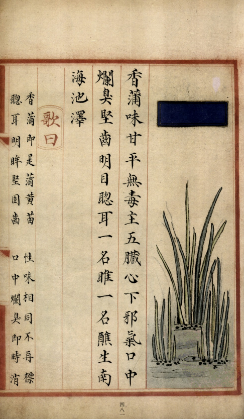
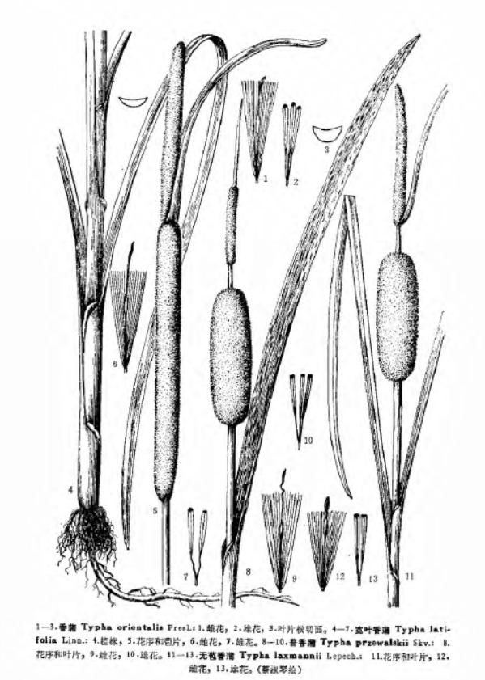

出现篇目
别名 甘蒲（苏恭）、醮石（《吴普》）
古代记载 《毛诗故训传》
笺云：蒲，柔滑之物。芙蕖之茎曰荷，生而佼大。兴者，蒲以喻所说男之性，荷以喻所说女之容体也。正以陂中二物兴者，喻淫风由同姓生。
《毛诗草木鸟兽虫鱼疏》
蒲，始生取其中心，入地者名蒻，大如匕柄，正白，生啖之甘脆，煮而以苦酒浸之，如食笋法。
《毛诗正义》
正义曰：《释草》云：“戎菽谓之荏菽。”孙炎曰：“大豆也。”此笺亦以为大豆。樊光、舍人、李巡、郭璞皆云：“今以为胡豆。”璞又云：“《春秋》‘齐侯来献戎捷’，《穀梁传》曰：‘戎菽也。’《管子》亦云：‘北伐山戎，出冬葱及戎菽，布之天下。’今之胡豆是也。”案《尔雅》戎菽皆为大豆，注《穀梁》者亦以为大豆也。（《毛诗正义》疏《泽陂》）
《诗集传》
蒲、水草可爲席者（《诗集传》集注《泽陂》）
《本草纲目》
《别录》曰∶香蒲生南海池泽。蒲黄生河东池泽，四月采之。 颂曰∶香蒲，蒲黄苗也。处处有之，以泰州者为良。春初生嫩叶，未出水时，红白色茸茸然。取其中心入地白 ，大如匕柄者，生啖之，甘脆。又以醋浸，如食笋，大美。《周礼》谓之蒲菹，今人罕有食之者。至夏抽梗于丛叶中，花抱梗端，如武士棒杵，故俚俗谓之蒲槌，亦曰蒲厘花。其蒲黄，即花中蕊屑也。细若金粉，当欲开时便取之。市廛以蜜搜作果食货卖。 时珍曰∶蒲丛生水际，似莞而褊，有脊而柔，二、三月苗。采其嫩根，瀹过作鲊，一宿可食。亦可炸食、蒸食及晒干磨粉作饼食。《诗》云∶其蔌伊何？惟笋及蒲。是矣。八、九月收叶以为席，亦可作扇，软滑而温。
当代记载 《中国植物志》
香蒲 （Typha orientalis），香蒲科，香蒲属植物。多年生水生或沼生草本。根状茎乳白色。地上茎粗壮，向上渐细，高1.3-2米。叶片条形。种子褐色，微弯。花果期5-8月。
产黑龙江、吉林、辽宁、内蒙古、河北、山西、河南、陕西、安徽、江苏、浙江、江西、广东、云南、台湾等省区。生于湖泊、池塘、沟渠、沼泽及河流缓流带。菲律宾、日本、原苏联及大洋洲等地均有分布。

<补遗雷公炮制便览>

<中国植物志>